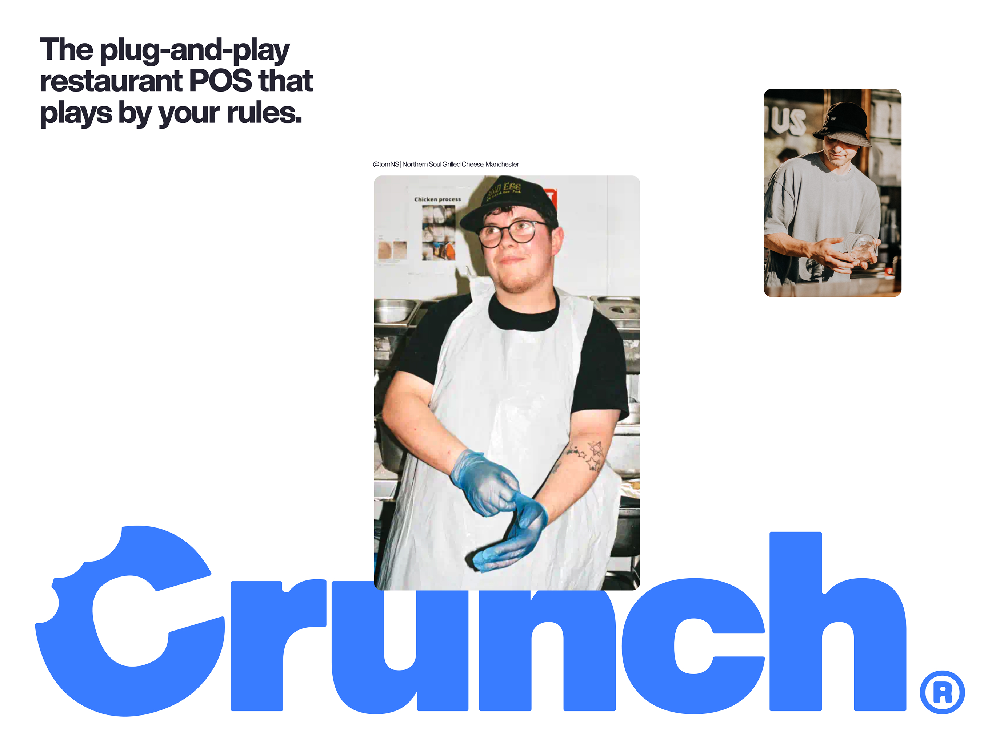
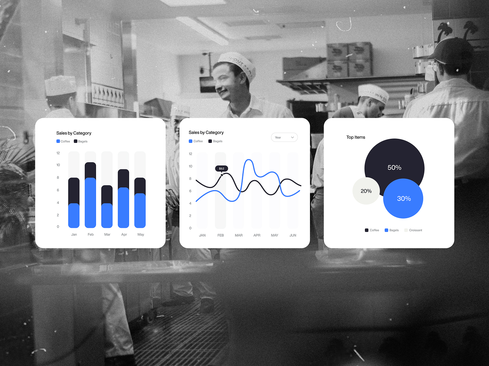
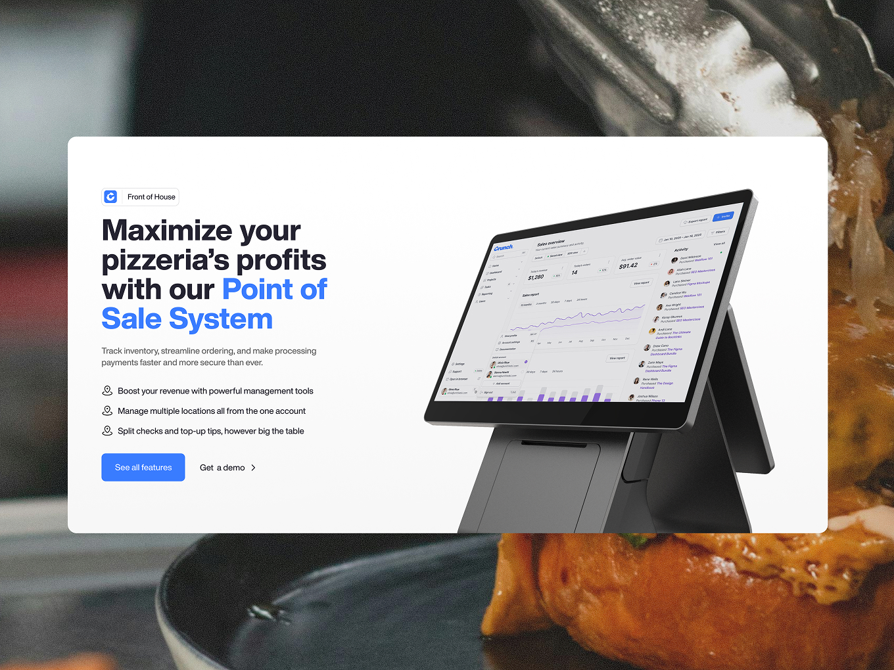
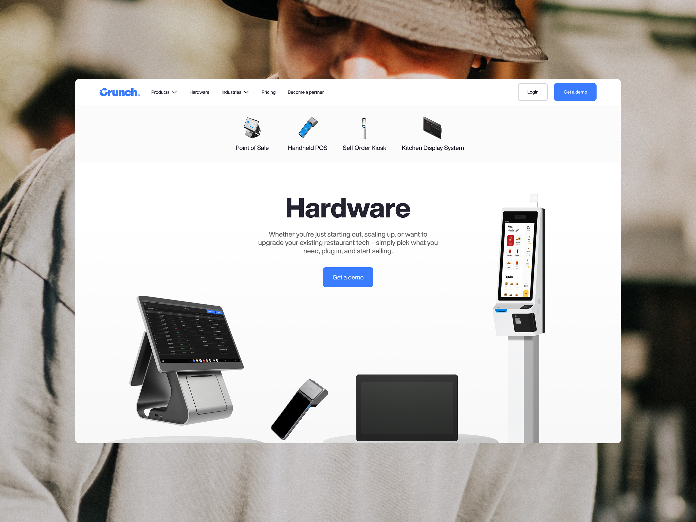
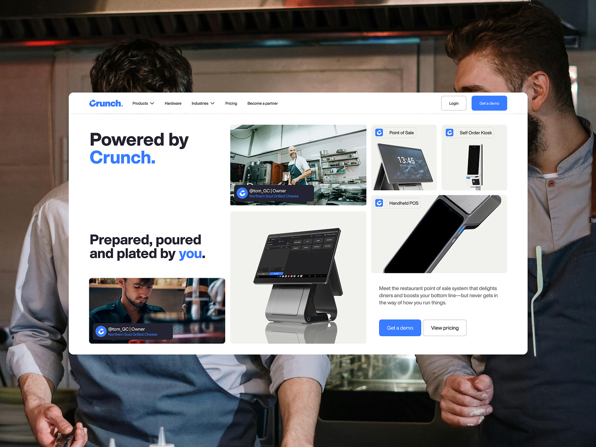
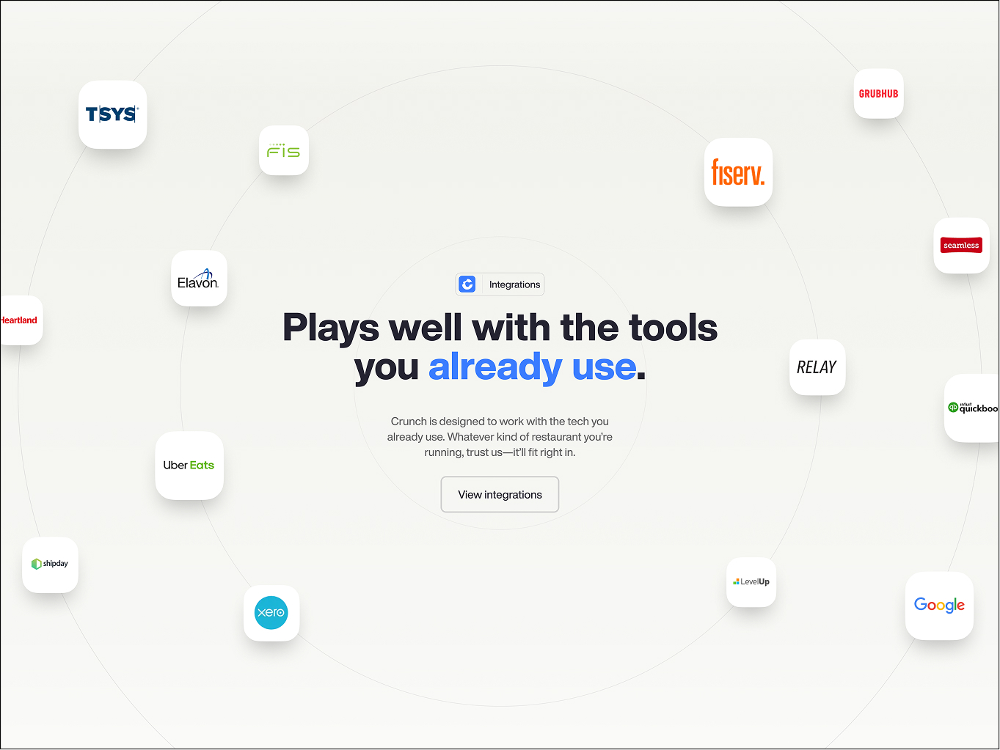
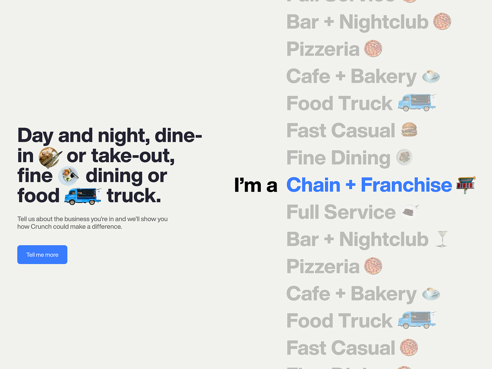
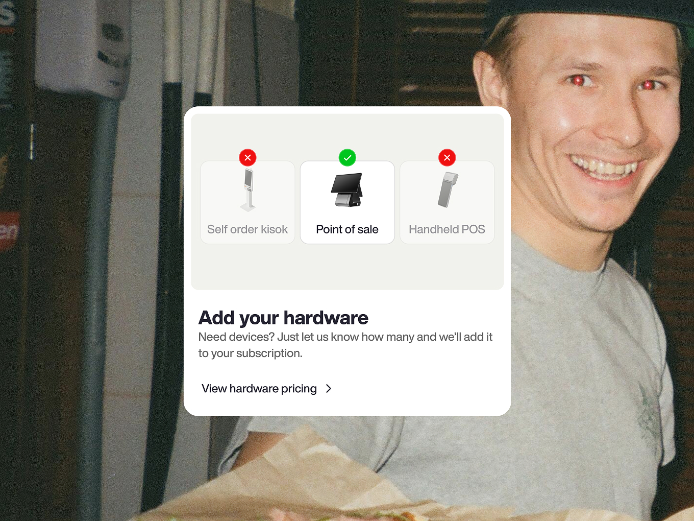

CrunchPOS
People First, Tech Second
Crunch is a POS and payments platform built by former restaurant owners for restaurant owners, already trusted by over 22,000 restaurants. But the brand hadn't caught up with the business, generic, jargon-heavy, and burying the “built by people who've run a kitchen” story that made Crunch different. I led Series Eight's work to rebuild the brand and restructure the website around how customers actually think, not how the product team organised it, work that later got picked up by design publication OFFCUTS.
Results
- Competitor audit: Toast, Clover, SpotOn, SkyTab, Square
- Brand & TOV workshop, distilled into three tone pillars
- IA workshop, restructured around customer intent
- Full visual identity: colour, type, logo, photography
- System extended across web, product UI, app icon, social, OOH, packaging

The Challenge
Crunch was competing against well-funded, polished rivals like Toast, Square, Clover, SpotOn and SkyTab, all of whom lead with trust signals, clean visual hierarchy and confident positioning. Crunch's own site buried its strongest asset, an authentic founder story, under dense, feature-led copy and a navigation structure organised around internal product names rather than what a restaurant owner would search for. The brand voice was functional but forgettable. Without a distinct identity and a site people could actually scan, Crunch risked blending into a crowded category it had every right to stand out in.


The Approach
I started with discovery: benchmarking Crunch against Toast, Clover, SpotOn, SkyTab and Square to find the category's conventions and its gaps, then ran a brand and tone-of-voice workshop with the Crunch team that distilled a “Bold & Powerful” personality into three pillars, Empowering, Expressive and Straight-talking, anchored on the founder story and the idea of putting people before technology.
In parallel, an information architecture workshop rebuilt the sitemap around how a restaurant owner actually thinks about their business, Front of House, Back of House, Office and Ecommerce, with pricing pulled out as its own destination, giving us a simplified primary nav we could benchmark directly against competitors.
From there I built the visual system: a disciplined four-colour palette (Bright White, Midnight Blue, Neon Blue, Off White) chosen so blue signalled trust without losing energy, paired with Helvetica Now Display, a wordmark plus a standalone spiral “C” icon mark, and documentary, candid photography, real kitchens, real staff, to keep “people first” visible rather than just written down. I then extended that system across every touchpoint, web, product UI, app icon, social, out-of-home and packaging, and QA'd it throughout to keep it consistent.

The Outcome
Crunch came out with a coherent identity built to hold its own against much bigger-budget competitors, and a website navigation restructured around customer intent rather than internal product taxonomy. The tone-of-voice framework and brand guidelines gave the wider team a documented system to apply consistently across future work, rather than relying on one-off decisions. The rebrand was recognised externally too, featured in the 2026 edition of design publication OFFCUTS. More importantly, Crunch came away with a fully optimised Craft CMS site built on solid foundations, designed to actually evolve with the business rather than need another overhaul in a year.


Reflection
This was as much a structural problem as a branding one. Running the IA work and the brand workshop in parallel meant the identity didn't just get applied to the site, it shaped how the site was organised in the first place.

